Can a generalist VLM (Claude Opus 4.8) curate a trip album as well as the engineered
Albumify pipeline? Same 122 photos → 768px (hash 19b384f1fda78994…), each picks an ordered
K=20. Spec-102.
| Metric | Albumify (minimal) | VLM (opus-4-8) | Read |
|---|---|---|---|
| Distinct scenes covered | 20 | 19 | by Albumify's own scene clusters |
| Redundancy rate | 0.00 | 0.05 | VLM slightly more diverse — and it never saw the clusters |
| Pick overlap | 0 / 20 identical | 70% of the album is a genuine disagreement | |
| Picks Albumify quality-filtered | — | 6: 20240816_152405, 20240820_133757, 20240820_164646, IMG_20240824_110517, IMG_20240824_180959, IMG_20240826_170113 | VLM kept shots Albumify auto-rejected on quality |
minimal
pipeline, not the full product: the full 33-step run OOM-kills this machine when the occlusion
CLIP model loads on top of YOLO+InsightFace+DINOv2+AVA, so occlusion & tilt penalties are
disabled here. (2) The human blind A/B verdict is not yet collected — the judging page is
built (ab_viewer_germany.html); this is a solo N=1 pilot, so even once judged it is an
illustrative anecdote, not a measured win-rate.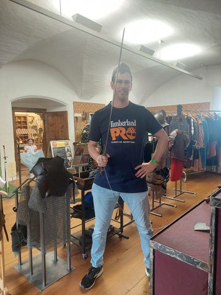
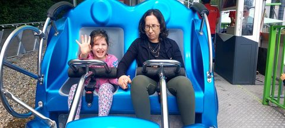
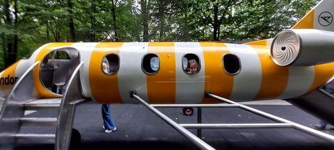
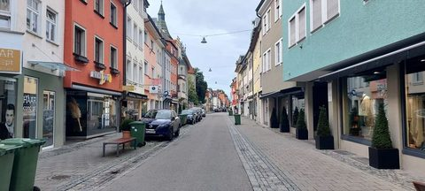
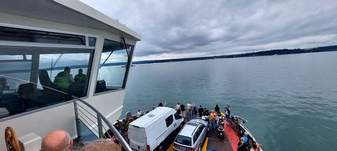
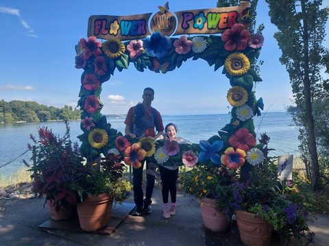
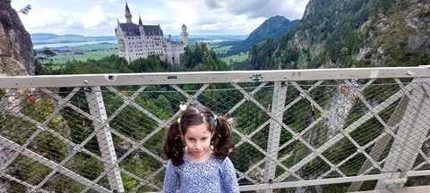
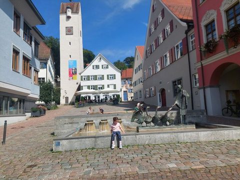
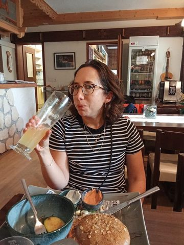
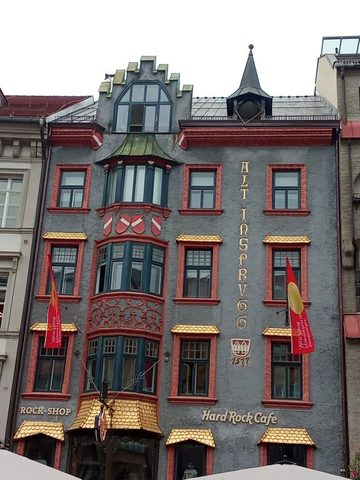
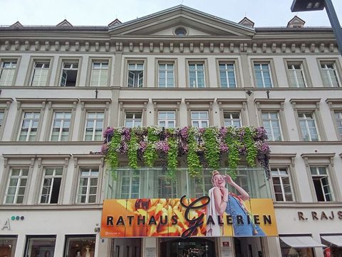
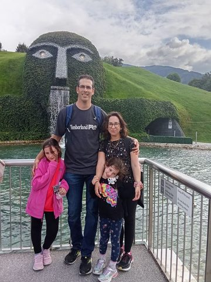
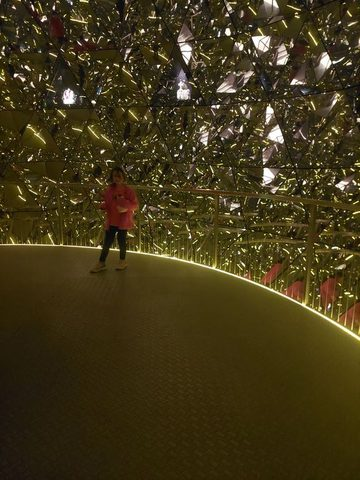
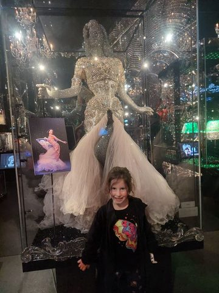
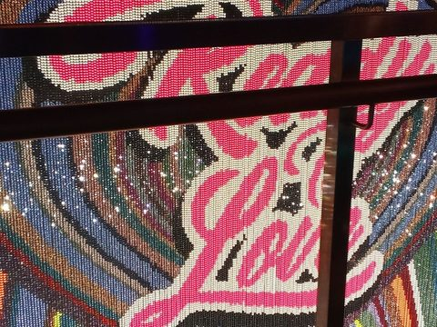
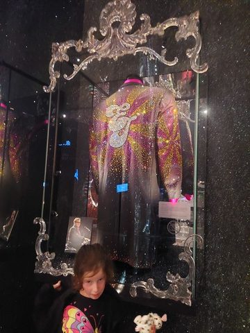
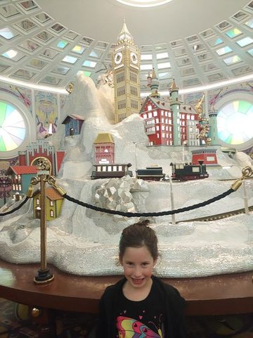
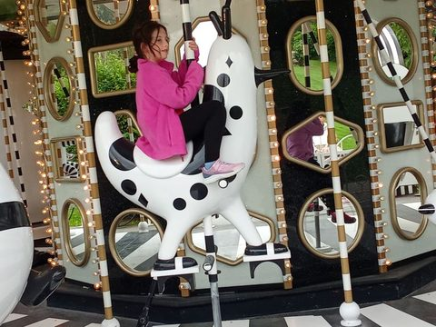
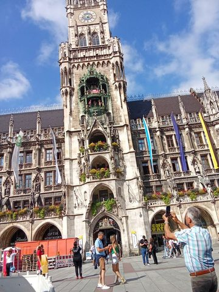
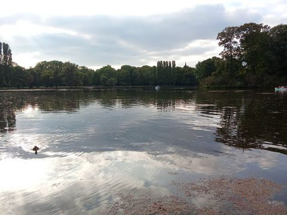
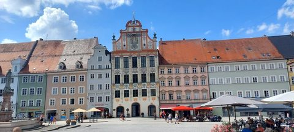
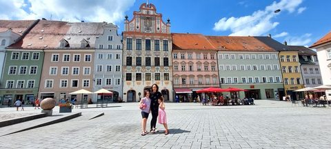
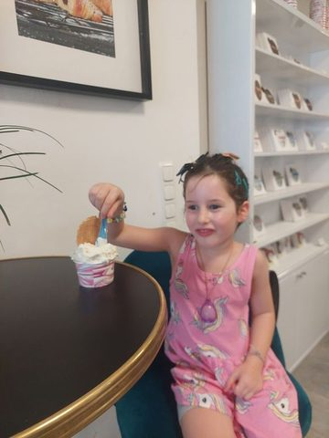
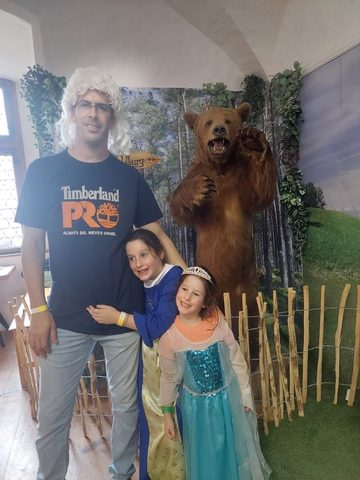
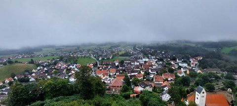
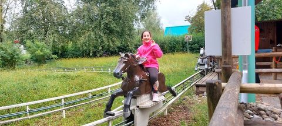
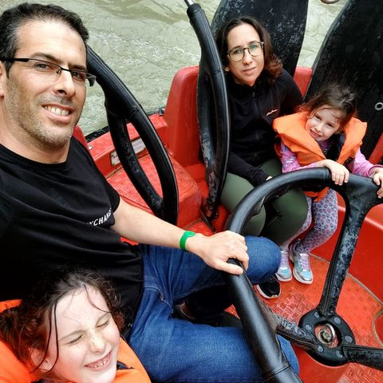
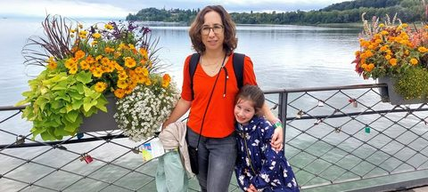
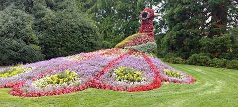
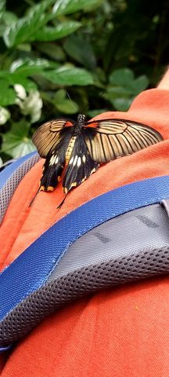
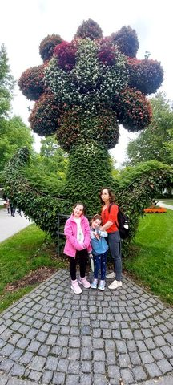
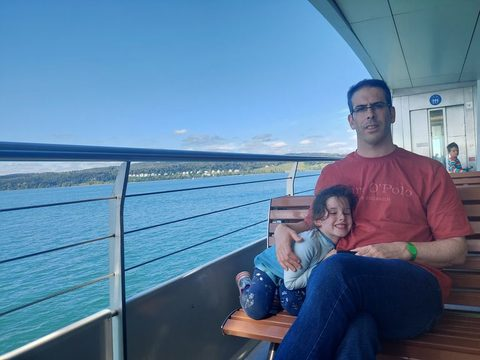
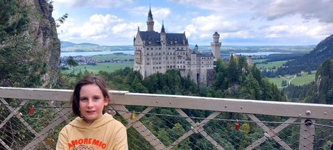
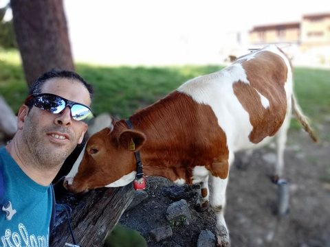
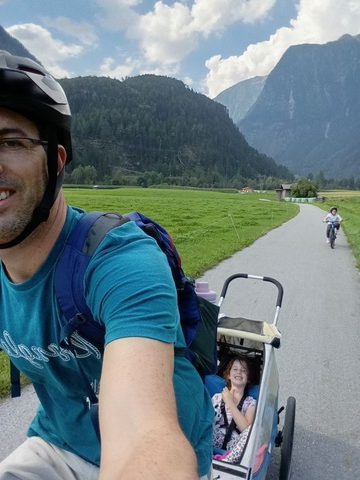
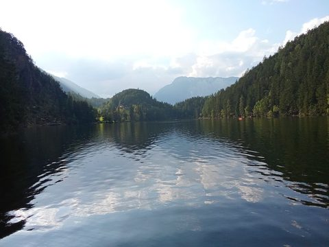
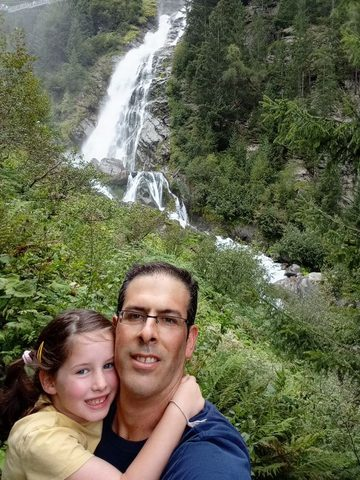
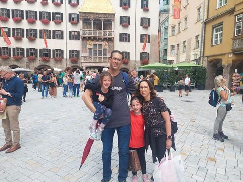
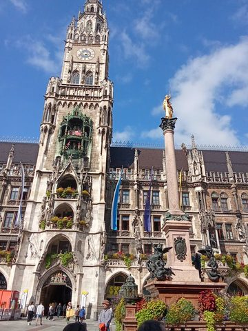
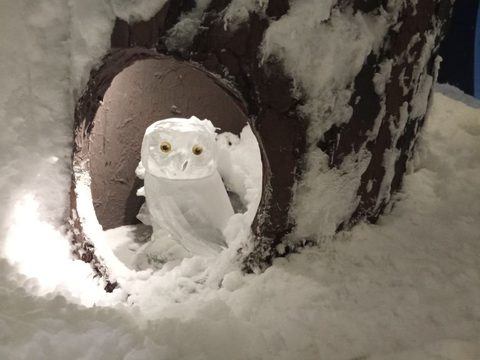
The VLM classified the whole collection as trip / road and wrote the arc: "A multi-day family road trip across southern Germany and Austria—from hotel breakfasts, holiday-park adventures and medieval castles to lake ferries, alpine waterfalls, mountain gardens and city old-towns—following one family with young daughters through playgrounds, hikes, meals and golden-hour moments." It then grouped the trip into 177 moments with human-readable labels, moment tags, and a best-frame reason each (structured JSON, product-shaped). A sample:
| Day | Moment | Tag | Why this frame |
|---|---|---|---|
| 2024-08-16 | Breakfast waffles at the hotel | meal | Sweet close-up of her concentrating on cutting into that chocolate-chip waffle — a proper start-of-day food moment |
| 2024-08-16 | Shoe shopping stop at Schuh Center | posed-group | Everyone settled and looking at the camera with both store signs framing them nicely |
| 2024-08-16 | Landsberg's painted town hall square | landmark | The whole trio posed small against the grand frescoed facade — the definitive 'we were here' square shot |
| 2024-08-16 | Family lunch in the cozy wood-panelled Stube | candid | Real slice-of-life scene — dad mid-story, girls coloring while waiting for food |
| 2024-08-16 | The weir & family selfies by Bachwirt | goofing | The one where everyone's actually smiling in the flower-framed family selfie by the rushing water |
| 2024-08-16 | Standing tall on the riverside bench | posed-group | Bright blue sky and the gabled houses behind them, all three balanced on the bench with room to breathe |
| 2024-08-16 | Gelato break for the girls | candid | Little one beaming with her wafer-topped cup — the joy of the treat is written on her face |
| 2024-08-16 | The one where they rode in the grocery cart | goofing | Both sisters piled in among the veggies, hugging and laughing — peak silly-shopping memory |
| 2024-08-16 | Golf-cart adventure at the holiday park | golden-hour | Girls grinning up front, dad driving behind, moody evening sky — captures the fun of buzzing around the park |
| 2024-08-17 | The golf-cart family portrait | posed-group | Whole crew squeezed into the little cart, plate 'FI 158' framed dead center — the day's kickoff shot. |
| 2024-08-17 | Koi pond in the tropical dome | the-one-where-the-girls-watched-the-koi | Dad and both girls together on the bridge with koi below and lush jungle behind — the fullest family beat of the pond visit. |
| 2024-08-17 | Bamboo water-fort splash zone | candid | Tipping bucket loaded overhead with dad mid-play — the anticipation frame that sells the waterpark. |
| 2024-08-17 | Tuesday Kids-Special lunch at the Brauhaus | meal | The 'Kids Special Jeden Dienstag' board is the charming context; the receipt backs up the story of the free kids' meal. |
| 2024-08-17 | Viking-ship playground on the sand | candid | Big wooden ship slide under blue sky — a clear standalone play stop. |
| 2024-08-17 | Evening bike ride through the resort | golden-hour | Little one leading on training wheels with mom rolling up behind — the ride's story in one warm frame. |
| 2024-08-17 | Rainbow over the forest cabins | golden-hour | Faint rainbow arcing over the woodland chalets — the postcard mood shot of where they stayed. |
| 2024-08-17 | Dinner on the cabin deck | meal | Whole family around the table with salad and sausages — the cozy day-closing selfie. |
| 2024-08-18 | Dad the swordsman in the armoury | goofing | Full hand-on-hip swagger with the sword raised — the classic 'I am the knight' pose |
| 2024-08-18 | Dad crowned king | goofing | Smiling in the little red crown with helmets behind — pure silly royalty |
| 2024-08-18 | Princess for a day | the-one-where-X | Beaming in the blue fleur-de-lis gown by the gilt mirror |
| 2024-08-18 | Sir Dad & his princesses in armour | posed-group | Dad in the knight's tunic with a little masked princess tucked in front — sweet pairing |
| 2024-08-18 | Dad's wild white wig | goofing | Mid-laugh in the ridiculous curly white wig — the funniest beat of the day |
| 2024-08-18 | The one with the giant bear | posed-group | Both girls hugging in as the bear rears up behind — everyone connected and grinning |
| 2024-08-18 | Face-painting: becoming a butterfly | candid | Big sister carefully painting little sister's face — a tender kid-to-kid moment |
| 2024-08-18 | The finished butterfly face | posed-group | Full-length, proud shy smile showing off the purple butterfly paint |
| 2024-08-18 | Elsa princess with painted face | posed-group | The wide happy grin in the sparkly blue dress and tiara — best of the set |
| 2024-08-18 | Whole family & the bear | posed-group | Everyone together, closer crop, warm family portrait with the bear |
| 2024-08-18 | The imperial crown & regalia | detail | Clearest, best-lit angle of the jewelled crown — the museum's showpiece |
| 2024-08-18 | Museum wander & posing by portraits | candid | Little one reaching up to the noblewoman's portrait — playful and full of character |
| 2024-08-18 | Misty view from the castle tower | landmark | Dad's selfie with the fog-wrapped village below — puts a face on the panorama |
| 2024-08-18 | Striped-shutter castle courtyard | landmark | The striking painted shutters capture the castle's face outside |
| 2024-08-18 | Souvenir knight sketch | detail | The Wangen knight drawing — a keepsake from the visit |
| 2024-08-18 | Leutkirch station stop | transit | Closest, clearest shot of the yellow LEUTKIRCH facade — marks the journey home |
| 2024-08-18 | Colouring & dessert at the burger place | meal | Face-painted girl eyeing up the tiramisu spoonful — the perfect end-of-day treat |
| 2024-08-19 | Arrival & the Lotti Karotti bunny at the gate | posed-group | Full-length shot next to the cartoon rabbit statue with a genuine smile — the classic 'we made it to the park' opener |
| 2024-08-19 | The farm-animal spinner carousel | candid | Big wave and grin astride the sheep — the joyful centerpiece of the whole spinner sequence |
| 2024-08-19 | The one where she milks the fake cow | goofing | A cheeky pose 'milking' the Omira cow — a story-worthy one-off gag |
| 2024-08-19 | The little horse coaster through the meadow | candid | Wide, sunny frame with the full track curve and a beaming rider — captures the whole ride in one shot |
| 2024-08-19 | The big red raft ride | candid | Everyone loaded in the raft at the top of the ramp — the full crew captured before the plunge |
| 2024-08-19 | Daddy-daughter on the spinning coaster | the-one-where-X | Mom and the little one strapped in with the loop coaster behind — the real-motion adrenaline frame |
| 2024-08-19 | Pedal go-kart laps | goofing | Mom and daughter piled onto one kart, both laughing — pure silly-together energy |
| 2024-08-19 | Peeking out of the playground airplane | candid | Sweet close-up grinning through the plane window — an irresistible portrait moment |
| 2024-08-19 | The wet jet-boat splash ride | the-one-where-X | Whole soaked family in one steering-wheel selfie — everyone in the moment, life vests and all |
| 2024-08-19 | Straw-bale mascots welcome photo | posed-group | Mom and both girls together in front of the giant hay-bale animals — the cleanest full-family group shot |
| 2024-08-19 | Another spin on the animal carousel | candid | Big proud smile riding the pig — the standout happy frame of the second carousel round |
| 2024-08-19 | The old wooden horse & goat carousel | detail | Best sweeping view of the whole charming vintage carousel packed with riders |
| 2024-08-19 | The giant jumping pillow | goofing | Caught mid-air jumping with other kids — peak bouncy-pillow fun frozen in motion |
| 2024-08-19 | Coloring at the burger restaurant | candid | Both girls leaning in over the coloring sheet — a warm sisterly waiting-for-food moment |
| 2024-08-19 | The one where the burger is bigger than her head | meal | Two hands wrestling an enormous burger — a classic 'look at this thing' dinner shot |
| 2024-08-19 | Evening stroll through the old town | detail | Quiet cobblestone shopping street with colorful facades — sets the after-dinner wander mood |
| 2024-08-19 | Gelato at Gelatomania | candid | Bright-eyed grin next to the chocolate teddy-bear sundae — the gelato-treat highlight |
| 2024-08-19 | Drive home past the town gate tower | transit | Golden-hour view of the medieval tower framed by the road — the day's closing image |
| 2024-08-20 | Ferry crossing to Mainau — grey morning on the lake | transit | The deck full of cars and passengers plus the wheelhouse actually reads as 'we're on the ferry', not just another grey lake shot |
| 2024-08-20 | Daughter bundled against the wind on deck | candid | Her pointing out at the water in the hooded unicorn coat is the liveliest, most storytelling frame |
| 2024-08-20 | Mom & daughter cuddled on the ferry bench | candid | Quiet mother-daughter moment while the lake slides by |
| 2024-08-20 | Dad & daughter selfies with the berry snack | posed-group | Both smiling and she's proudly holding the tub of berries — the warmest of the near-identical selfies |
| 2024-08-20 | The paddle steamer passing by | detail | Classic white paddle steamer crossing our wake — a nice spotted-a-ship beat |
| 2024-08-20 | Docking — the ferry Kreuzlingen at the pier | transit | The named hull 'KREUZLINGEN' pins down exactly which boat carried us |
| 2024-08-20 | Lakeshore reeds & swans before the gardens | detail | Several swans gliding across the calm lake against the wooded shore — the fullest, prettiest of the wildlife shots |
| 2024-08-20 | Dad & daughter by the misty reeds | posed-group | Big grins with the moody water behind — a genuine keeper selfie |
| 2024-08-20 | Flower boxes on the lakeside railing | detail | The orange zinnia arrangement against the silver lake is the most vivid detail shot |
| 2024-08-20 | Mom & daughter at the flower railing | posed-group | The one where the daughter leans in and they both look relaxed between the flower boxes |
| 2024-08-20 | The giant flower-tree topiary on Mainau | landmark | The full group posed under the towering flower-topiary — the definitive 'we visited Mainau' shot |
| 2024-08-20 | Daughter among the flower beds | posed-group | Full-length shot with the lush orange flower bed and lake behind — the most vibrant of the set |
| 2024-08-20 | The wisteria pergola courtyard | candid | Her wandering the green pergola with the little stream reads as an explore-the-garden beat |
| 2024-08-20 | The flower peacock & animal topiaries | landmark | The full flower-peacock in bloom is Mainau's signature piece — the showstopper of the day |
| 2024-08-20 | Daughter in her unicorn shirt by the borders | posed-group | Sweet solo portrait with rich red border behind — nicely framed keeper |
| 2024-08-20 | The cactus & succulent garden | detail | She stands centred in front of the desert bed — a clear this-is-where-we-were shot |
| 2024-08-20 | Mom & the giant yellow clogs | goofing | Crouched deadpan beside the oversized clogs — a playful, memorable pose |
| 2024-08-20 | The one where she pets the turtle | the-one-where-X | Her gently touching the wandering turtle is a real can't-believe-it kid moment |
| 2024-08-20 | Butterflies in the tropical house | detail | The malachite butterfly wings fully open on a leaf is the crispest, most striking macro of the lot |
| 2024-08-20 | Kids watching the butterflies | candid | Her face lit up inches from the orange-spotted butterfly captures the wonder of the visit |
| 2024-08-20 | The one where a butterfly rides Dad's shoulder | the-one-where-X | The big swallowtail perched on his shoulder as he smiles — a funny, only-happens-once shot |
| 2024-08-20 | Climbing the giant leaning tree | goofing | Both girls perched grinning on the huge horizontal limb — the joyful climbing-tree moment |
| 2024-08-20 | The pony in the petting barn | detail | The shaggy-maned pony is a nice quiet animal encounter in the barn |
| 2024-08-20 | Mom under the trees with ice cream | candid | Sun-dappled candid of mom pausing with her cup by the water |
| 2024-08-20 | The water-lily pond & ducks | detail | Daughter crouched at the water's edge amid pink lilies and the fountain — combines place and person beautifully |
| 2024-08-20 | Sun finally out over the blue lake | golden-hour | The clouds broke to deep blue sky and water — the day's brightest scenic |
| 2024-08-20 | Family in the Flower Power frame | posed-group | Everyone holding up the flower props under the 'Flower Power' arch with blue lake behind — the fun signature group shot |
| 2024-08-20 | Ferry home in the afternoon sun | transit | Dad cuddling the sleepy laughing daughter against the turquoise sunlit lake — the contented ride-home moment |
| 2024-08-20 | Fruit-crêpe treat back in town | meal | She looks straight up mid-bite with the fruit-piled crêpe — the perfect end-of-day treat shot |
| 2024-08-21 | Dessert stop before the castle climb | meal | The lone food shot of the day — chocolate cake with a mountain of whipped cream, the sweet pause before the hike. |
| 2024-08-21 | First glimpse of Neuschwanstein | landmark | The sweeping wide panorama with lakes and rolling hills nails that jaw-drop first-sight-of-the-fairytale-castle feeling. |
| 2024-08-21 | Amore Mio girl on Marienbrücke | posed-group | Big genuine smile, castle framed perfectly over her shoulder — the keeper of her portrait series on the bridge. |
| 2024-08-21 | Pigtails on the bridge | posed-group | Sweetest ear-to-ear grin of the little one's set, with the castle crisp behind her — the standout of many wiggly attempts. |
| 2024-08-21 | The castle from the bridge & the gorge below | landmark | Cleanest close-up of Neuschwanstein against dramatic clouds — the postcard shot of the whole day. |
| 2024-08-21 | Dad and the fairytale castle | posed-group | Best-lit portrait of dad with the castle beautifully framed to the side — the grown-up's turn in front of the lens. |
| 2024-08-22 | Planning the day over the Hebrew park guide | detail | The buggy-ride selfie with Mom and daughter munching a snack is the real 'we're off' moment, not the phone screenshots |
| 2024-08-22 | Village stroll past the church & old timber houses | landmark | The green-spired church against blue sky is the postcard shot that anchors the village |
| 2024-08-22 | Family selfie burst by the flower fence | posed-group | Everyone smiling and looking at the camera with the flowers behind — the keeper of the whole burst |
| 2024-08-22 | The one at the Räuberweg trail sign | the-one-where-X | Girls stacked up under the hand-carved RÄUBERWEG sign — clearly marks the start of the adventure trail |
| 2024-08-22 | Little one by the flowers & robber signpost | candid | Daughter proudly holding the robber character sign under the Hausbachklamm gate — a fun story frame |
| 2024-08-22 | Hausbachklamm creek walk & waterfalls | landmark | The stepped waterfall in full flow is the standout scenery of the gorge walk |
| 2024-08-22 | Skipping stones at the pebble riverbank | candid | All three crouched together picking stones by the water — a genuine shared play moment |
| 2024-08-22 | Crossing the little garden footbridge | posed-group | Bright sky, three of them posed together on the bridge — the cleanest of the set |
| 2024-08-22 | Mom & Dad on the forest bridge | posed-group | Rare couple shot of the parents together, relaxed against the greenery |
| 2024-08-22 | Animal-track puzzle boards in the woods | candid | Dad and both girls working the peg-board game together — engaged and interactive |
| 2024-08-22 | The long hillside slide | goofing | Mom and daughter sliding down together with a grinning kid waiting below — full of joy and motion |
| 2024-08-22 | Mom & the valley viewpoint | candid | Family selfie with the whole green valley and village spread out behind — the view payoff |
| 2024-08-22 | Dad taking a breather on the trail | candid | Dad perched on the rail, a natural rest-stop portrait |
| 2024-08-22 | Log balance & water-channel games | goofing | Both girls at the wooden water-play station — the clearest look at them enjoying the trail contraptions |
| 2024-08-22 | The shiny metal meadow slide | goofing | Kid poised at the top of the steep silver slide with bright meadow behind — anticipation captured |
| 2024-08-22 | Quiz boxes on the wildlife trail | candid | Younger daughter beaming while answering the rabbit-jump quiz box — playful learning moment |
| 2024-08-22 | The one at the robber & gendarme mural | the-one-where-X | Younger daughter clowning between the painted robber and policeman — the funniest, most characterful frame |
| 2024-08-22 | Heading back through the village | candid | Daughter smiling on the path with the church spire framed ahead — a warm end-of-hike beat |
| 2024-08-22 | Old town wander in Isny | landmark | The goose fountain with the white tower behind and kids playing — captures the town's charm and the family in it |
| 2024-08-22 | Golden hour back at the cabins | golden-hour | Warm evening light on the timber cabins and pines — the 'home for the night' glow |
| 2024-08-22 | Splashing in the tropical pool dome | goofing | Dad and both girls grinning under the cascade in goggles — the joyful end-of-day pool moment |
| 2024-08-24 | Morning views from the Ötztal apartment | detail | Best captures the classic Tyrolean chalet with maypole and mountains framing the valley — the postcard 'where we stayed' shot |
| 2024-08-24 | Cable car up to Hochoetz | candid | Tender mom-and-daughter heads-together moment reading the activity booklet — the quiet ride-up beat before the day's adventures |
| 2024-08-24 | The cows at the mountain trough | the-one-where-dad-poses-with-cows | Dad cheek-to-cheek with the calf in sunglasses — the funniest, most memorable animal-encounter frame of the day |
| 2024-08-24 | Girl at the wooden horse fountain | candid | Daughter exploring the carved wooden horse-head spring in dappled light — a curious, storybook moment |
| 2024-08-24 | Widiversum playground: slides, wheels & water games | goofing | Both girls posing at the big Widiversum Hochoetz sign — the perfect 'we were here' album anchor for the playground stop |
| 2024-08-24 | The mountaintop lake & raft play | candid | Mom steering the raft with both girls, mountains behind — the most joyful active family moment at the lake |
| 2024-08-24 | Lazing on the giant swing bench | posed-group | The whole family piled on the swing bench with everyone looking — the day's best group selfie |
| 2024-08-24 | Alpine detail: gnarled roots & pines | detail | Striking red exposed roots over white rock — a texture shot worth keeping as an album breather |
| 2024-08-24 | Valley bike ride with the trailer | transit | Dad's selfie with the daughter grinning in the trailer and the older girl cycling behind, mountains all around — captures the whole family-ride vibe |
| 2024-08-24 | The one where she learned to ride the hills | the-one-where-she-rides-solo | Daughter beaming on her bike against green fields — proud independent-rider moment |
| 2024-08-24 | Waterfall stop on the ride | detail | Rushing stone cascade under the bridge — a scenic pause worth its own frame |
| 2024-08-24 | Quick stop at KiK | candid | The Shaun-the-Sheep sculpture in the village square gives a fun sense of place for the errand stop |
| 2024-08-24 | Golden hour at the swimming lake | golden-hour | The wooden lakeside lodge reflected in still water with sunbathers on the deck — the serene end-of-day lake scene |
| 2024-08-24 | Dinner & ice cream to end the day | meal | Daughter planting the cocktail umbrella into her chocolate sundae — the sweetest, most candid end-of-day treat |
| 2024-08-25 | Breakfast before the big day out | meal | The only breakfast shot — sets the morning scene with both girls at the table before heading out |
| 2024-08-25 | Ötzi Dorf entrance sign | landmark | Classic 'we were here' shot at the carved Ötzi Dorf sign, kicks off the outing |
| 2024-08-25 | Valley view rest stop by the stream | posed-group | Daughter smiling on the tree stump with the whole green valley and mountains spread behind her — the best keeper of this scenic pause |
| 2024-08-25 | Little one playing in the mountain brook | candid | She's reaching into the clear water fully absorbed — the most storytelling frame of a kid exploring the creek |
| 2024-08-25 | Forest stream & waterfall trail | detail | Sunbeams cutting through the trees over the cascade — the most atmospheric of the scenery-only shots |
| 2024-08-25 | Unicorn shirt by the little cascade | posed-group | Sweet posed smile beside the rushing water, sharpest and best lit of the trio |
| 2024-08-25 | Dad posing on the rock | posed-group | Full-body dad shot on the rock, brighter and better framed of the two |
| 2024-08-25 | Heart-shirt daughter by the falls | posed-group | Better eye contact and framing with the waterfall behind her |
| 2024-08-25 | The one where they cross the stepping stones | candid | Dad reaching back to steady his daughter mid-leap across the stones — the most dynamic, tender action moment of the day |
| 2024-08-25 | Dad & daughter cuddle on the trail rock | candid | Affectionate hug on the rock with the sister's hand entering frame — warm candid over the wider version |
| 2024-08-25 | Dad balancing on the stone weir | candid | Dad grinning while balancing over the water — a fun standalone beat |
| 2024-08-25 | Dad & little one by the stream crossing | posed-group | Both looking at the camera, standing together above the creek — the cleaner posed pair |
| 2024-08-25 | Bridge over the rapids portraits | posed-group | Younger daughter's bright grin against the churning white water — the most joyful of the bridge portraits |
| 2024-08-25 | Rushing river scenery | detail | Powerful cascade tumbling through the boulders — strongest pure-landscape frame |
| 2024-08-25 | Mum & Dad together on the trail | posed-group | Relaxed couple shot with arms around each other, both smiling by the river |
| 2024-08-25 | Whole family by the river | posed-group | Three of them huddled together — a rare full-family frame on the trail |
| 2024-08-25 | Girls at the cascading rapids | posed-group | Younger daughter's big natural smile with the whitewater cascade filling the frame behind — the standout of the batch |
| 2024-08-25 | First view of Stuibenfall waterfall | landmark | Daughter seated on the boulder with the full falls dropping in behind — best combines person and the landmark reveal |
| 2024-08-25 | Waterfall viewing platform | posed-group | Mum and both girls smiling at the rail with the falls roaring alongside — the liveliest group frame on the platform |
| 2024-08-25 | The one with the whole-family waterfall selfie | goofing | Everyone crammed into one selfie, kids waving and grinning — the definitive 'we all made it here' shot |
| 2024-08-25 | Dad & daughter selfies at the falls | posed-group | Cheek-to-cheek with the towering waterfall behind, sharpest and warmest of the three |
| 2024-08-25 | Stuibenfall in full view | landmark | Daughter beaming in front of the towering full-height falls — the best hero shot of the day's main landmark |
| 2024-08-25 | Valley views on the way down | detail | Framed by pines with the village nestled in the misty valley — the most composed of the descent views |
| 2024-08-25 | Back in the village meadows | detail | Village church spire above the green meadow with mountains behind — the postcard village view |
| 2024-08-25 | The giant hedge mammoth fountain | detail | Quirky green mammoth statue spouting water — a memorable oddity to close the day |
| 2024-08-26 | Misty morning by the village pond | detail | The still reflection of the fogged-in mountains sets the quiet mood of the day's early start |
| 2024-08-26 | Puppy phone call at the Innsbruck fountain | goofing | She's beaming, holding the toy dog to her ear like a phone — pure kid silliness |
| 2024-08-26 | The colorful Inn riverfront houses | detail | The pastel houses across the river frame her with a big genuine smile |
| 2024-08-26 | Wandering Innsbruck's old-town facades | detail | The ornate Alt Innsbruck Hard Rock facade is the most striking of the street details |
| 2024-08-26 | Family at the Golden Roof | posed-group | The whole family clustered together, all facing camera with the golden balcony perfectly behind them |
| 2024-08-26 | Tiramisu break and coloring at the cafe | meal | The one dessert-and-coloring pause of the day, cozy and candid |
| 2024-08-26 | Swarovski Crystal Worlds giant head entrance | posed-group | Everyone relaxed and smiling in front of the iconic waterfall-face landmark |
| 2024-08-26 | Crystal treasures and the big diamond | detail | The glowing giant crystal is the wow-object of the collection |
| 2024-08-26 | Mom & daughter in the winter forest room | candid | Mom and daughter hugging by the frosted white tree, both warm and happy |
| 2024-08-26 | Whole family in the icy tree hall | posed-group | All four together and smiling under the shimmering frozen tree — the best group frame of the room |
| 2024-08-26 | Inside the mirrored crystal dome | goofing | Mom and daughter cheek-to-cheek glowing inside the mirrored dome — the warmest selfie of the set |
| 2024-08-26 | The sparkling costume gallery | the-one-where-she-poses-with-the-gowns | She grins wide beside the glittering gown — the standout playful pose among the dazzling costumes |
| 2024-08-26 | Ready to Love rainbow crystal wall | posed-group | Daughter beaming against the vivid rainbow 'Ready to Love' wall — bright and joyful |
| 2024-08-26 | The crystal train-town model under the dome | landmark | Daughter grinning big in front of the fairytale crystal cityscape with Big Ben |
| 2024-08-26 | Silly selfies in the green crystal maze | goofing | Both girls making goofy faces with mom in the green-lit maze — peak candid fun |
| 2024-08-26 | Modern crystal art rooms | detail | The dramatic white geometric room with hanging chandelier is the most gallery-worthy shot |
| 2024-08-26 | The clown magic show at the resort | candid | Kids sitting on the grass watching the clown perform — the whole scene in one frame |
| 2024-08-26 | The black-and-white carousel | goofing | Daughter laughing mid-ride on the quirky striped creature — the carousel joy captured perfectly |
| 2024-08-26 | Mom & daughter on the Ferris wheel | candid | Cheek-to-cheek selfie inside the gondola closes the day on a sweet note |
| 2024-08-27 | Lunch at the Vietnamese place — sushi & chopstick wins | meal | The whole-family selfie around the table is the keeper — everyone in one frame at the meal that anchors the day |
| 2024-08-27 | Parking garage & Ratskeller sign on the way in | detail | The ornate Ratskeller lantern against the busy Munich street sets the scene for the city walk |
| 2024-08-27 | Marienplatz & the old town hall tower | landmark | Cleanest shot of the New Town Hall Glockenspiel tower and Mariensäule column under blue sky |
| 2024-08-27 | Living statues & street performers on Marienplatz | candid | The silver top-hat statue reading his book is the sharpest, most characterful of the buskers |
| 2024-08-27 | The one where mom & the girls posed at the Rathaus | posed-group | All three looking relaxed with the full facade behind — the family portrait of the square |
| 2024-08-27 | Heart hands on the S-Bahn | goofing | The gap-toothed grin with heart hands and her reflection in the window is pure joy |
| 2024-08-27 | Siegestor arch on the ride to the park | landmark | Marks the transition from city center to the evening bike outing |
| 2024-08-27 | Evening bike ride through the Englischer Garten | candid | Dad's helmet selfie with a kid biking behind under the tree canopy captures the family-ride feeling |
| 2024-08-27 | The one where she raced her bike | the-one-where-X | The motion-blur panning shot makes her speed feel real — the standout action frame |
| 2024-08-27 | Kleinhesseloher See at dusk | golden-hour | Sunbeams breaking through cloud over the mirrored lake with a lone duck — the calmest, prettiest of the water shots |
| 2024-08-27 | Bench break by the lake | posed-group | Dad and daughter smiling in helmets with the grandmas resting on the bench behind — end-of-ride warmth |